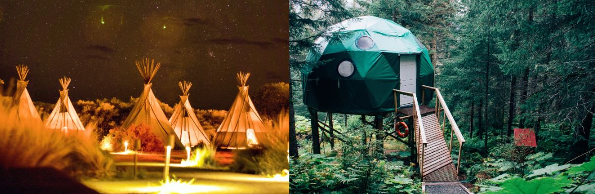

What is Glamping and different types of Glamping.
Glamping is just short for glamorous camping. It has gotten more popular over the past decade as it has appealed to more and more people. This type of camping can be camping cabins, tree houses, safari tents, yurts, or teepees. This has become one of my favorite types of camping as it has made packing up less stressful after a vacation. Below is a list of the different types of glamping.
Different types of glamping
- Tree house glamping
- Camping Cabin glamping
- Deluxe Cabin glamping
- Safari Tents
- Teepees

This type of glamping appeals to kids and the kid at heart. These are usually modern treehouses with all the bells and whistles to keep you happy. A treehouse camp is a perfect getaway for the whole family. Just like when we were all kids and loved having tree houses, these types of getaways will appeal to all who want to remember their younger days.

If you want a regular roof over your head, then this is the type of glamping for you. There will be a bed to sleep in and a wall on all sides. This type of glamping gets rid of the need to pack a tent or any type of mattress to sleep on. Amenities are plenty, electricity, water, and many other things to make you as comfortable as when you were at home.
Deluxe cabin glamping offers the comfort of having a working bathroom and the luxury of the camping cabin. Some amenities in certain deluxe cabins can include other amenities such as bed linens, kitchenettes, and more. Be prepared to pay more to stay at one of the cabins as they are built with luxury in mind.
These have been in so many different movies where they have to show some type of luxurious lifestyle. These usually come with furniture, fully functioning kitchens, electricity, and some sort of storage.
Also know as a "Tipi", these are small tents usually used by used by North American Indians that live in the Plains and Great Lakes regions. These are close to regular tents except they are built in an upside down cone shape with stretched out buffalo skin and usually have a smoke flag at the top.
Why choose Glamping or Camping
Both types of experiencing the outdoors have their pros and cons. If you are the type of person who wants to take on nature without all the luxuries of a traditional home, then camping is for you. With traditional camping, you can pack light and spend a couple of nights in nature then pack up in a short amount of time and head home.
When it comes to camping in luxury, the option of glamping will always be mentioned. If you are the type of individual who needs modern amenities while camping then glamping will the best choice. However, packing up after a glamping trip will be more tedious than the traditional camping trip.
Transform traditional camping into glamping
Many people will say that technology isn't needed when you go camping. But what if someone wants to enjoy both the peace of mind that comes with nature and the comfort of electronic gadgets? Then the best thing to do is to turn a regular camping trip into a glamping trip. You would do this by bringing certain amenities that it would be hard to stay away from for too long. Bring a special type of tent or rent a cabin that already has all the amenities you need.
Do glamping tents have toilets?
For your and my convenience, glamping tents do have a loo. This means we do not have to go running across the field to get to a toilet.
ConclusionThe answer to what is glamping is simple. Glamping is camping in style or luxury. Glamping allows you to enjoy peace of mind and to enjoy nature at its best. Glamping is very popular nowadays and it would be a shame to not experience one of the many types offered. I have experienced Teepee glamping and the Safari Tents and would like to experience the others soon.